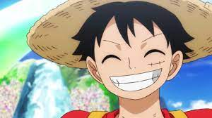

|  | |
Titulo - 1Monkī Dī Rufi?, também conhecido como Luffy do Chapéu de Palha), é um personagem fictício e o protagonista da franquia One Piece criada por Eiichiro Oda. Ele é apresentado como um jovem cujo corpo ganha as propriedades de borracha após ter comido a Gomu-Gomu no Mi,[nota 1] uma das várias frutas amaldiçoadas conhecidas como Akuma no Mi ou Frutas do Diabo. Em busca de seu sonho de ser o Rei dos Piratas, Luffy navega pelo mundo procurando o lendário tesouro One Piece que foi deixado por Gol D. Roger, o antigo Rei dos Piratas. Alegre e aventureiro, Luffy cria seu próprio bando chamado os Piratas do Chapéu de Palha e eles são constantemente antagonizados pela marinha do Governo Mundial. Em batalha, Luffy usa a elasticidade de seu corpo para se esticar e lutar. Um protótipo de Luffy apareceu pela primeira vez no one-shot Romance Dawn lançado por Eiichiro Oda em 1996 enquanto ele ainda era um assistente de outros mangakás. O personagem foi refinado e reutilizado para o mangá de One Piece um ano depois e então adaptado para anime, consequentemente aparecendo em seus filmes, OVAs e especiais de TV. Com as crescentes vendas e popularidade do mangá, bem como sua longevidade, Luffy se tornou um ícone da cultura otaku e um dos personagens mais famosos de anime. Além de produtos licenciados da série, ele já foi destaque de inúmeras mídias e formas de arte diferentes e participou de crossovers com vários personagens de outras franquias. Conforme One Piece se tornou o mangá mais vendido da história, a fama de Luffy também foi celebrada pelo mundo. Mesmo com anos de publicação, Luffy se mantém o personagem mais popular de sua obra. |
|
|
Eiichiro Oda se inspirou em Dragon Ball de Akira Toriyama quando começou a escrever sua obra. De acordo com ele, Luffy foi pensado como tendo a "masculinidade" dos personagens de Dragon Ball.[4] Oda procurava criar um personagem para um "mundo de homens" já que, segundo o próprio autor, Dragon Ball já havia feito todas as coisas que deixariam uma criança feliz.[4] Luffy fez sua estreia no one-shot Romance Dawn durante um mostruário de novos artistas realizado pela revista Weekly Shōnen Jump. Apesar de fisicamente similar à versão final do personagem, aqui Luffy era muito mais esperto e não dava nomes aos seus ataques.[5] Pouco tempo depois a história foi relançada sobe o título de Romance Dawn, version 2 na própria Shōnen Jump. Uma diferença notável é que Luffy receberia sua fruta e seu chapéu do seu avô ao invés do personagem Shanks como foi determinado na publicação final.[6] Depois disso foi feito o primeiro capítulo de One Piece em si, trazendo uma das últimas mudanças feitas em seu design: a cicatriz embaixo de seu olho esquerdo.[2] Enquanto trabalhava no maneirismo e personalidade do personagem, Oda decidiu que poderes de borracha permitiriam que Luffy sempre pudesse entrar em situações ridículas e engraçadas não importando o quão sério o enredo estivesse.[7] O autor também o fez ser franco e simplista em relação aquilo que quer e, por conta disso, dentre os personagens principais Luffy é aquele que menos possui balões de pensamentos.[8] Quando questionado por um fã sobre a escolha de Luffy de não matar seus oponentes, Oda explicou que não se trata de uma questão de moralidade mas sim que fazer os vilões ficarem vivos para verem seus sonhos serem arruinados é uma punição maior do que a morte.[9] Sobre sua etinia, Oda revelou que caso One Piece se passasse no mundo real ele imagina Luffy como brasileiro. |
|
|
Desenvolvido por William Lourenço - 2023 |
|